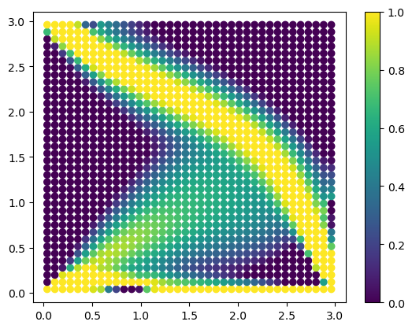

Tutorial: topology optimisation using pyfe3d#
Date: 14 of October 2024
Author: Saullo G. P. Castro
Cite this tutorial as:
Castro, SGP (2026). General-purpose finite element solver based on Python and Cython (Version 0.7.0). Zenodo. DOI: https://doi.org/10.5281/zenodo.6573489.
Importing Python modules#
[1]:
import numpy as np
from numpy import isclose
from scipy.sparse.linalg import cg
from scipy.sparse import coo_matrix
from scipy.optimize import minimize
from pyfe3d.shellprop_utils import isotropic_plate
from pyfe3d import Quad4R, Quad4RData, Quad4RProbe, INT, DOUBLE, DOF
Creating mesh#
[2]:
data = Quad4RData()
probe = Quad4RProbe()
nx = 39
ny = 39
N = DOF*nx*ny
a = 3.0
b = 3.0
c = 3
E0 = 203.e9 # Pa
nu = 0.33
h = 0.003 # m
xtmp = np.linspace(0, a, nx)
ytmp = np.linspace(0, b, ny)
xmesh, ymesh = np.meshgrid(xtmp, ytmp)
ncoords = np.vstack((xmesh.T.flatten(), ymesh.T.flatten(), np.zeros_like(ymesh.T.flatten()))).T
x = ncoords[:, 0]
y = ncoords[:, 1]
z = ncoords[:, 2]
ncoords_flatten = ncoords.flatten()
nids = 1 + np.arange(ncoords.shape[0])
nid_pos = dict(zip(nids, np.arange(len(nids))))
nids_mesh = nids.reshape(nx, ny)
n1s = nids_mesh[:-1, :-1].flatten()
n2s = nids_mesh[1:, :-1].flatten()
n3s = nids_mesh[1:, 1:].flatten()
n4s = nids_mesh[:-1, 1:].flatten()
num_elements = len(n1s)
print('# number of elements', num_elements)
nodes = list(zip(n1s, n2s, n3s, n4s))
# number of elements 1444
Calculate the stiffness matrix for a vector of design variables “rho”#
The Young moduli of every element is calculated using the power law: \(E=\rho^c E_0\), where \(E_0\) is the original Young modulus.
[3]:
def calc_K(rho):
E = rho**c*E0
KC0r = np.zeros(data.KC0_SPARSE_SIZE*num_elements, dtype=INT)
KC0c = np.zeros(data.KC0_SPARSE_SIZE*num_elements, dtype=INT)
KC0v = np.zeros(data.KC0_SPARSE_SIZE*num_elements, dtype=DOUBLE)
quads = []
init_k_KC0 = 0
i = 0
for n1, n2, n3, n4 in zip(n1s, n2s, n3s, n4s):
prop = isotropic_plate(thickness=h, E=E[i], nu=nu)
i += 1
pos1 = nid_pos[n1]
pos2 = nid_pos[n2]
pos3 = nid_pos[n3]
pos4 = nid_pos[n4]
r1 = ncoords[pos1]
r2 = ncoords[pos2]
r3 = ncoords[pos3]
normal = np.cross(r2 - r1, r3 - r2)[2]
assert normal > 0
quad = Quad4R(probe)
quad.n1 = n1
quad.n2 = n2
quad.n3 = n3
quad.n4 = n4
quad.c1 = DOF*nid_pos[n1]
quad.c2 = DOF*nid_pos[n2]
quad.c3 = DOF*nid_pos[n3]
quad.c4 = DOF*nid_pos[n4]
quad.init_k_KC0 = init_k_KC0
quad.update_rotation_matrix(ncoords_flatten)
quad.update_probe_xe(ncoords_flatten)
quad.update_KC0(KC0r, KC0c, KC0v, prop)
quads.append(quad)
init_k_KC0 += data.KC0_SPARSE_SIZE
KC0 = coo_matrix((KC0v, (KC0r, KC0c)), shape=(N, N)).tocsc()
return KC0
Sensitivity of the stiffness matrix with respect to the vector “rho”#
The local support of \(\rho_i\) in vector \(\vec{\rho} = \{\rho_1, \rho_2, \dots, \rho_i, \dots, \rho_N\}\) makes it easy to calculate the sensitivity.
\[\frac{\partial E}{\partial \rho}\big\rvert_i = c \rho_i^{c-1} E_0\]
[4]:
def K_rho(rho, i):
E_rho = c*rho[i]**(c-1)*E0
prop = isotropic_plate(thickness=h, E=E_rho, nu=nu)
KC0r = np.zeros(1*data.KC0_SPARSE_SIZE, dtype=INT)
KC0c = np.zeros(1*data.KC0_SPARSE_SIZE, dtype=INT)
KC0v = np.zeros(1*data.KC0_SPARSE_SIZE, dtype=DOUBLE)
n1, n2, n3, n4 = nodes[i]
pos1 = nid_pos[n1]
pos2 = nid_pos[n2]
pos3 = nid_pos[n3]
pos4 = nid_pos[n4]
r1 = ncoords[pos1]
r2 = ncoords[pos2]
r3 = ncoords[pos3]
normal = np.cross(r2 - r1, r3 - r2)[2]
assert normal > 0
quad = Quad4R(probe)
quad.n1 = n1
quad.n2 = n2
quad.n3 = n3
quad.n4 = n4
quad.c1 = DOF*nid_pos[n1]
quad.c2 = DOF*nid_pos[n2]
quad.c3 = DOF*nid_pos[n3]
quad.c4 = DOF*nid_pos[n4]
quad.init_k_KC0 = 0
quad.update_rotation_matrix(ncoords_flatten)
quad.update_probe_xe(ncoords_flatten)
quad.update_KC0(KC0r, KC0c, KC0v, prop)
KC0 = coo_matrix((KC0v, (KC0r, KC0c)), shape=(N, N)).tocsc()
return KC0
Applying boundary conditions and forces#
[5]:
bk = np.zeros(N, dtype=bool)
check = isclose(x, 0) & (isclose(y, 0.) | isclose(y, b))
bk[0::DOF] = check
bk[1::DOF] = check
# making it a 2D membrane problem
bk[2::DOF] = True
bk[3::DOF] = True
bk[4::DOF] = True
bu = ~bk
# applying load along u at x=a
# nodes at vertices get 1/2 of the force
fext = np.zeros(N)
ftotal = -1000.
print('ftotal', ftotal)
# at x=0
check = isclose(x, a) & isclose(y, 0)
fext[1::DOF][check] = ftotal
ftotal -1000.0
Performing topology optimization#
[6]:
uu = None
K = None
def jac(rho):
"""Adjoint gradient of the compliance with respect to each density in 'rho'
"""
global uu, K
# K = calc_K(rho=rho)
# Kuu = K[bu, :][:, bu]
u = np.zeros(N)
# PREC = np.max(1/Kuu.diagonal())
# uu, info = cg(PREC*Kuu, PREC*fext[bu], atol=1e-3)
u[bu] = uu
C_rho = np.zeros(num_elements)
for i in range(num_elements):
C_rho[i] = - u.T @ K_rho(rho, i) @ u
return C_rho
def rel_volume(rho):
target_rel_volume = 0.4
constr = target_rel_volume - np.sum(rho)/num_elements
return constr
def objective(rho):
global uu, K
K = calc_K(rho)
Kuu = K[bu, :][:, bu]
PREC = np.max(1/Kuu.diagonal())
uu, info = cg(PREC*Kuu, PREC*fext[bu], atol=1e-3)
compl = uu.T @ Kuu @ uu
print('# obj', compl)
return compl
constraints = [
{'type': 'ineq', 'fun': rel_volume},
]
bounds = [[1.e-6, 1.] for _ in range(num_elements)]
rho = np.ones(num_elements)
topopt = minimize(objective, rho, jac=jac, method='SLSQP',
constraints=constraints, bounds=bounds)
# obj 0.033832252800008615
# obj 0.5508208775327929
# obj 0.35056640116912446
# obj 0.3212980522423214
# obj 0.2604234282771639
# obj 0.2449434200662851
# obj 0.22074536296090183
# obj 0.2105406156252594
# obj 0.20058035842292687
# obj 0.19017502091430835
# obj 0.18560680272049865
# obj 0.17593771635827266
# obj 0.1693518451257613
# obj 0.1661156669899295
# obj 0.16021682424326036
# obj 0.15688417731246715
# obj 0.15424089120970655
# obj 0.15055714917108884
# obj 0.14756220118490734
# obj 0.14367159642885863
# obj 0.14160407403459357
# obj 0.13902549341970882
# obj 0.13742159386527103
# obj 0.13458473020946732
# obj 0.13138989732106807
# obj 0.1281323623414923
# obj 0.12297825722637376
# obj 0.1189987177024779
# obj 0.11405202005158001
# obj 0.11230026353562884
# obj 0.11042432276529802
# obj 0.10819781443650799
# obj 0.1057515038342003
# obj 0.10424919274479441
# obj 0.10252162581238984
# obj 0.10004692895633727
# obj 0.09743768261040024
# obj 0.09612823963855693
# obj 0.09502162061750205
# obj 0.09420686862548405
# obj 0.09295296520164813
# obj 0.09180329024684881
# obj 0.09093397533090912
# obj 0.0898342873179891
# obj 0.08840571310894652
# obj 0.0874225411621247
# obj 0.08647998966626652
# obj 0.0852419903831996
# obj 0.08407031380060168
# obj 0.08302013501285316
# obj 0.08198714405138831
# obj 0.08110499309616612
# obj 0.08023370584343362
# obj 0.07918131653713323
# obj 0.07829742896022325
# obj 0.07759035023472662
# obj 0.07692370820813388
# obj 0.07621835903755841
# obj 0.07534559366783598
# obj 0.07457483406799674
# obj 0.07365730395775166
# obj 0.07313382852484013
# obj 0.07260818691407728
# obj 0.0720679915380313
# obj 0.0716553729355943
# obj 0.07086235785566838
# obj 0.07049724184942334
# obj 0.07001736029115102
# obj 0.0692458852697462
# obj 0.06884731671933896
# obj 0.06844592654851535
# obj 0.0680359289470705
# obj 0.0676297389245287
# obj 0.06711555920278976
# obj 0.06668053298857517
# obj 0.06627930523373594
# obj 0.06584120083612102
# obj 0.0652779588223419
# obj 0.06497993200350877
# obj 0.06472931380814667
# obj 0.06442530627130955
# obj 0.06414826169582369
# obj 0.06383705854483007
# obj 0.06361110701331134
# obj 0.06342913552457737
# obj 0.06322018069948289
# obj 0.06302113975952704
# obj 0.0627842718722797
# obj 0.06251414328582833
# obj 0.06232910960777605
# obj 0.06202363181152726
# obj 0.061856390615271255
# obj 0.06170217032192385
# obj 0.06148200816336427
# obj 0.061297786871443535
# obj 0.061108458106964886
# obj 0.06089963490700554
# obj 0.06067197610446657
# obj 0.06039781200610773
# obj 0.06026061265557764
# obj 0.0600259787412853
Checking the result of the topology optimization#
[7]:
import matplotlib
import matplotlib.pyplot as plt
import matplotlib.cm as cm
xcg = np.zeros((num_elements, 3))
i = 0
for n1, n2, n3, n4 in zip(n1s, n2s, n3s, n4s):
pos1 = nid_pos[n1]
pos2 = nid_pos[n2]
pos3 = nid_pos[n3]
pos4 = nid_pos[n4]
r1 = ncoords[pos1]
r2 = ncoords[pos2]
r3 = ncoords[pos3]
r4 = ncoords[pos4]
xcg[i] = (r1 + r2 + r3 + r4)/4
i += 1
plt.clf()
plt.scatter(xcg[:, 0], xcg[:, 1], c=topopt.x, vmin=0, vmax=1)
plt.colorbar()
plt.show()

[ ]: